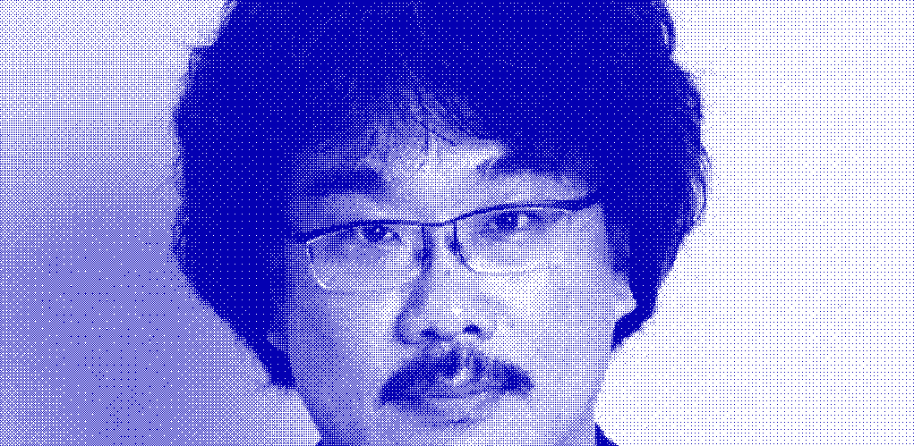
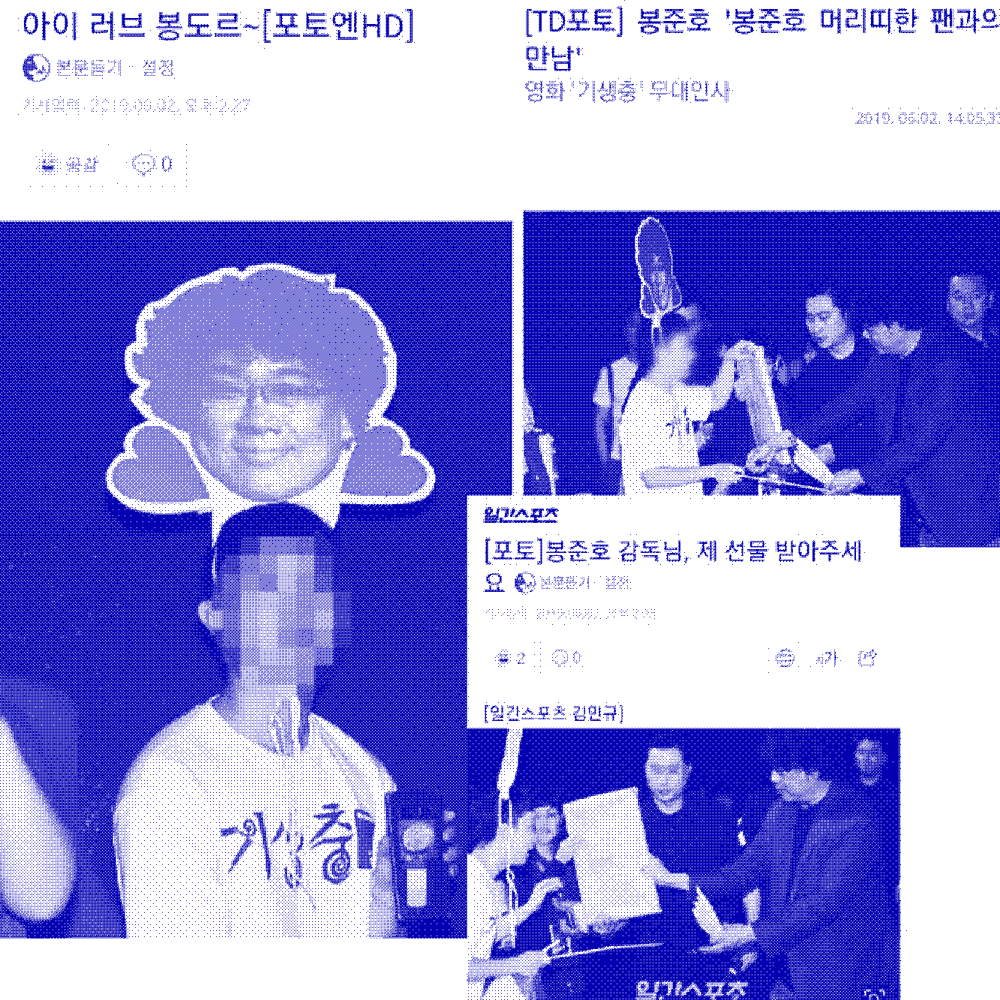

학생 때부터 나는 영화광이었다. 스스로 영화에 열정적이라고 자부하는 편이지만, 사실 편식을 조금 하는 편이긴 하다(히어로, 로맨스 안 본다.). 특히 전세계적으로 사랑받고 있는 봉준호 감독을 예전부터 정말 좋아했는데, 아이돌 가수 덕질 하듯 그를 덕질한다. 그의 영화가 가진 특유의 찝찝한 분위기를 좋아하기도 하고.. 뭐 여러가지 이유에서.
이 글은 2019년 6월 군복무하고 있을 당시 그를 만나러 간 이야기이다. 때는 영화 ‘기생충’이 칸영화제에서 황금종려상을 타고 막 돌아와 이제 한국에서 시사회를 하던 시기였다. 군인이었던 나는 감독과 배우의 무대인사가 진행되는 상영 티켓을 어렵게 구했고, 운좋게 그 행사에 참여할 수 있게 되었다. 나는 여러분에게 그 날의 일기를 보여주려 한다.
2019 06 02 최고의 날 / 기생충 무대인사
몇 주 전부터 예매해두었던 무대인사 당일,
마침 부대가 쉬는 날이라(하늘이 알아줌) 당장 특별외출을 나와 용산으로 달려갔다.
맨 앞줄 맨 끝자리에서 봤다. 불편하겠다 싶었는데 생각보다 볼만했음. 2시간 동안의 영화가 끝난 뒤 준비한 선물을 꺼내고 머리띠를 썼다. 심장 진짜 빨리 뛰더라. 주변의 스탭들이 내 꼬라지가 웃겼던지 사진을 찍고싶다 해서 흔쾌히 허락(두근두근). 한 스탭은 내가 준비한 선물을 보더니, 이따 감독님한테 냅다 달려가라는 조언을 주셨다ㅋㅋ
엔딩 크레딧이 끝나고 무대인사 차 기생충 배우분들과 감독님이 들어오셨다. 조여정 배우님과 과장없이 거의 10초 동안 눈을 마주보고 있었다. 그러고는 옆의 최우식 배우님과 나를 가리키고는 꺄르르 웃으셨다. 멋쩍게 손인사를 했다. 멘트들이 마무리 되고 기생충팀이 준비한 선물증정 시간, 봉감독님이 선물을 들고 내게 성큼성큼 오셨다.심정지 직전. 스탭들도 나한테 "지금가! 지금!" 하고 응원해주셨다ㅋㅋ 드디어 봉준호와의 대면.. 나는 기억나실지 모르겠지만 옥자 시사회 때 돼지코, 돼지귀를 달고 온 관객이라 말해주었다. "아~그 때 그 분이구나!" 하고 아는 체를 해주셨다ㅜㅜ 우리가 준비한 소주컵과 뱃지라며 선물 보따리를 건내셨다. 나도 내가 준비한 선물을 건냈다. 꿈 같은 선물교환식
행사가 마무리되고 송강호 배우님이 상영관을 나가시는 동안 웃는 얼굴로 나에게 눈을 못 떼셨다. 약간 "저 새끼 저거 골때리네ㅋㅋ" 느낌. 감독님이 나가시는 길, 마지막으로 외친 나의 사랑합니다!는 따봉으로 답장받았다.
옥자 이후 봉준호 감독님과의 두 번째 만남이다. 짜릿하고 벅차고 몽롱하다. 꿈 꾸는 듯..
눌러 쓴 편지에 담은 진심이 감독님께 닿기를 바란다. 행복한 날이다!
+ 결국 기사까지 떴음^^..
지금도 이 일기를 보면 가슴이 두근거린다. 일기를 보면 알겠지만 사실 2017년, 영화 ‘옥자’ 시사회 이벤트에도 당첨되어 봉준호 감독님을 본 적이 있었는데, 당시에는 영화 컨셉에 맞게 분홍색 옷을 입고, 돼지코, 돼지귀까지 준비해 시사회에 갔었다. 그런 나를 기억하시는 것 같았다.
이 글을 읽는 여러분들도 시간을 내어서라도 봉준호의 다른 영화들을 볼 필요가 있다. 플란다스의 개, 살인의 추억, 괴물, 마더, 설국열차, 옥자, 기생충으로 총 7편이다. 이 영화들은 여러분들의 인생을 송두리 채 바꿔놓을 수도 있고 새로운 꿈을 꾸게 해줄 수도 있으며, 세상을 바라보는 또 다른 눈을 선사해줄지도 모른다.
봉준호의 다음 영화는 어떤 영화일까? 그가 차기작을 준비하고 있으니 나는 아직 더 살아갈 이유가 있다.